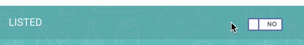

To edit a course, select the course in the Courses page. You will see an editable version of the course profile.
By default, a course is set to Unlisted. An unlisted status means the course can't be seen by public. A listed course means the public can view and register for the course (if course bookings were created). To change the listing status of a course, toggle the Listed field.
A course profile can only display one (1) flyer at a time.
If a course is listed, any changes you make are displayed immediately to the public.